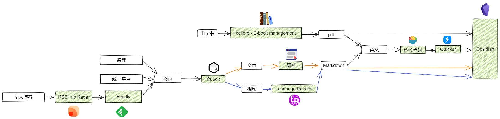

Other notes in learning and working
VSCode
快捷键
- 折叠：
⌘K ⌘[ - 展开：
⌘K ⌘] - 选择查找：
⌘F
自定义快捷键（依据 NeoVim）
1、文件目录
| 快捷键 | 功能 |
|---|---|
<space> + e |
开关目录树 |
| o | 打开文件/打开文件目录 |
| h | 折叠一个层级目录 |
| d | 删除文件 |
| a | 新建文件 |
| A | 新建文件夹 |
| r | 重命名文件 |
| j | 下移动条目 |
| k | 上移动条目 |
2、常规动作
| 快捷键 | 功能 |
|---|---|
<space> + o |
开关大纲 |
<space> + f |
搜索文件 |
<space> + F |
搜索字符（输入要搜索的字符后，按tab可切换到搜索结果，shift+tab回到搜索框) |
<ctrl> + h/j/k/l |
进入左边/下边/上边/右边窗口 |
<ctrl> + \ |
开关终端 |
<ctrl> + p |
开关panel |
3、代码导航
| 快捷键 | 功能 |
|---|---|
<leader> + t |
在声明/定义间来回跳转 (c和cpp项目，需要导出compile_commands.json文件) |
<leader> + u |
查看代码引用(浮动窗) |
<leader> + U |
查看代码引用（单独引用panel) |
alt + o |
c/c++ 切换源文件和头文件 |
<leader> + rn |
重命名符号 |
<space> + s |
搜索当前窗口下的符号 (vscode的 @) |
<space> + S |
搜索项目下的符号 (vscode #) |
4、代码诊断
| 快捷键 | 功能 |
|---|---|
<leader> + dj |
下一个错误 |
<leader>+ dk |
上一个错误 |
5、Git操作
| 快捷键 | 功能 |
|---|---|
<leader> + j |
下一个hunk |
<leader> + k |
上一个hunk |
<leader> + hs |
stage hunk |
<leader> + hu |
unstage hunk |
<leader> + hr |
reset hunk |
<space> + g |
打开git tab |
6、Debug
| 快捷键 | 功能 |
|---|---|
<leader> + db |
开关断点 |
snippets
应用：自定义输入短语
文件路径：
~/Library/Application Support/Code/User/snippets/*
如：
c.json:
{
// Place your snippets for c here. Each snippet is defined under a snippet name and has a prefix, body and
// description. The prefix is what is used to trigger the snippet and the body will be expanded and inserted. Possible variables are:
// $1, $2 for tab stops, $0 for the final cursor position, and ${1:label}, ${2:another} for placeholders. Placeholders with the
// same ids are connected.
// Example:
// "Print to console": {
// "prefix": "log",
// "body": [
// "console.log('$1');",
// "$2"
// ],
// "description": "Log output to console"
// }
"c frame": {
"prefix": "cframe",
"body": [
"#include <stdio.h>",
"",
"int main() {",
"",
" return 0;",
"}"
]
}
}
steam++
host加速前先执行以下命令
只有host加速才能使用git链接github
Mac Host文件权限
（避免每次启动关闭加速需要输入密码）请打开终端执行以下命令
sudo chmod +a 'user:baijiale:allow write' /etc/hosts
（如输入上面命令还提示无法hosts错误请尝试执行下面命令）
通过访达 前往 /etc 找到 hosts 文件显示简介 解锁权限修改 everyone 用户权限为 "读和写" 或者为 "无访问权限"
sudo chmod +a 'user:此处请修改为您当前的用户名:allow read' /etc/hosts
Multipass
参考：https://www.cnblogs.com/laina/articles/17644619.html
命令
创建虚拟机
multipass launch -n ubuntu -c 2 -m 2G -d 10G
- -n 指名字
- -c 指 核心数
- -m 指 内存
- -d 指硬盘
查看虚拟机列表
multipass list
查看虚拟机信息
multipass info ubuntu
外部操作虚拟机
multipass exec ubuntu pwd
进入虚拟机
multipass shell ubuntu
退出虚拟机
exit
启动、停止、删除、释放虚拟机
例：
# 启动实例
multipass start vm01
# 停止实例
multipass stop vm01
# 删除实例（删除后，还会存在）
multipass delete vm01
# 释放实例（彻底删除）
multipass purge vm01
传输文件
multipass transfer 主机文件 容器(虚拟机)名:容器（虚拟机）目录
- 将宿主机的文件传输到虚拟机里面去。
问题
1、桥接主机网卡(配置网桥)（使用主机 vpn 代理）
在宿主机命令行中执行：
multipass set local.bridged-network=en0
- en0 是网卡名称，创建前应该先用multipass networks命令查看有哪些网卡
Obsidian
块链接 与 块引用
块链接
链接某个笔记文件中的块，你首先需要输入 [[文件名 来唤起弹窗，在选择相应的文件后，通过输入 ^ 进入块选择界面。随后，你需要继续输入关键词来选择你所需要链接的块。
选择好了以后，按下回车键，对于该块的链接就创建好了。块链接会以 [[filename#^dcf64c]]的形式出现，其中 dcf64c 则是你所链接的块的 ID。
如果你忘了想链接的块在哪个文件里，你可以通过输入 [[^^ 在库的所有笔记文件中查找该块。由于这种查找方式涉及库中所有笔记文件，当你的库很大时，查找就需要花费一些时间。
比如，块链接与块引用 > ^dcf64c可以链接到前文的段落。
块引用
你可以通过在块链接前加上 ! 来进行块引用，即块的嵌入。
比如：
一个块可以是一个段落、一个引用、一个列表等等。一般来说，前后有空行包围的东西就是块。
手动创建块 ID
如果你想手动创建可读性强的块 ID，你可以在块的末尾手动加上 ^你的-id 这样的语法。需要注意的是，对于一般的段落，手动创建的 ID 和块最后一个字符（即段落最后一个字符）间需要有一个或多个空格。
如果想为表格这样比较复杂的块手动创建 ID，你需要将手动创建的 ID 放置在该块之后，同时确保手动创建的块 ID 前后都是空行。
内部链接
链接文件
创建内部链接非常简单，只需要输入 [[，并从弹出的列表里选择自己需要链接的文件即可。你可以通过上下方向键或输入关键词来选择文件，当所需文件被选中（高亮）时按下回车键即可完成链接。
链接标题
笔记文件一般都有标题。因此，除了链接整篇笔记外，你也可以单独链接到笔记的某个标题。链接到标题的步骤非常简单，首先还是输入 [[，并通过方向键选择所需链接的笔记。当该笔记被选中（高亮）时，按下 #（即 shift-3）来代替回车键。此时，弹出的列表将显示该笔记中的标题。然后，你可以通过上下方向键或输入关键词来选择所需链接的标题。当然，如果这个标题下还有更小的标题的话，你可以继续通过按下 # 来查看。当你选中了你想链接的标题后，按下 Enter 完成链接。
在预览模式下，内部链接可以显示为其他文字。要实现这点，只需通过 | 来修饰内部链接。比如，预览模式下显示的自定义字段。这可以与链接标题语法一起使用，比如举个折叠的例子。
clang-format
https://blog.csdn.net/Once_day/article/details/127761573
学习工作流
From：https://csdiy.wiki
